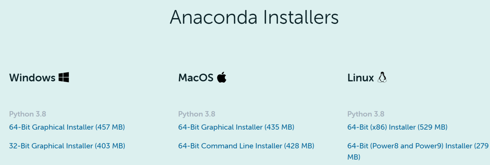
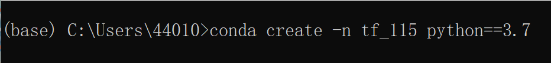
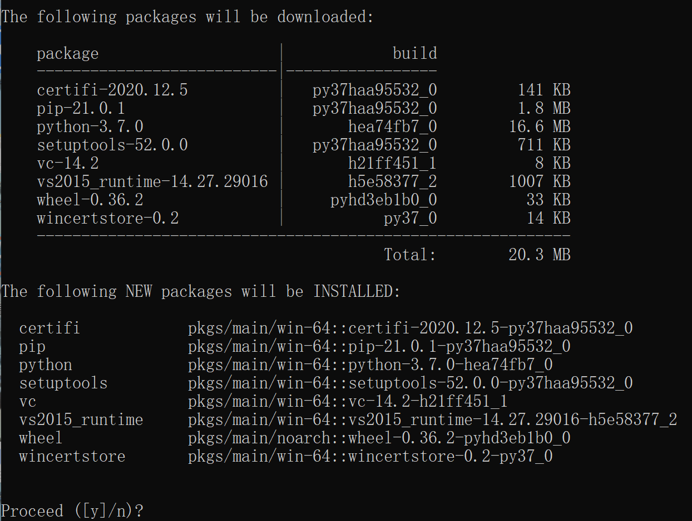
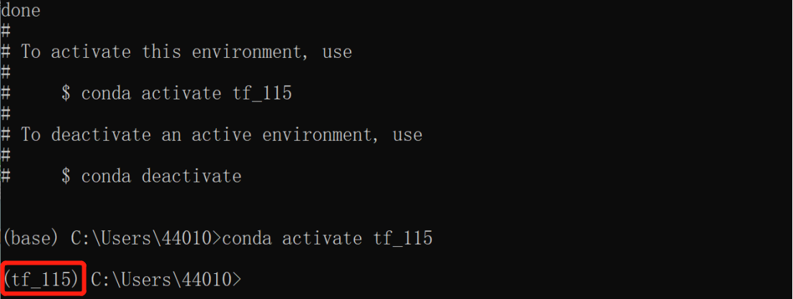
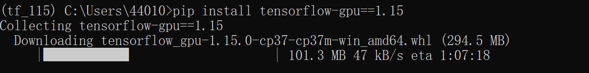
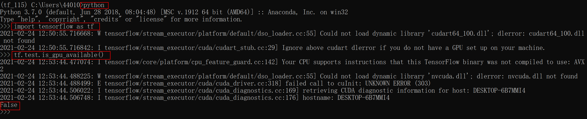
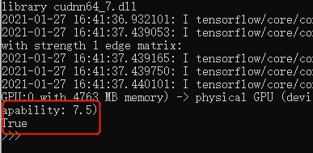
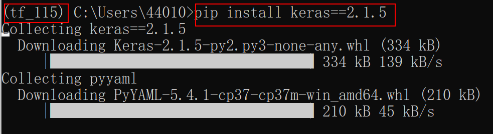

任务三 搭建keras-yolo3环境
【任务描述】
任务1、2完成后，我们获得标注好的图片，可以进行训练模型。我们并不需要搭自己的人工神经网络，毕竟有很多成熟的、效果好的框架和案例，我们可以直接拿来用。本项目将使用YOLO框架，复用keras-yolo3官方案例，改成我们自己的数据集进行训练即可。在此之前，需要搭建好运行环境。
【任务实施】
步骤1 下载并安装Anaconda anaconda.com.

根据自身电脑安装的操作系统选择适合的安装包进行下载，安装。
Tips：
Anaconda指的是一个开源的Python发行版本，其包含了conda、Python等180多个科学包及其依赖项，比如：numpy、pandas等。conda是一个开源的包、环境管理器，可以用于在同一个机器上安装不同版本的软件包及其依赖，并能够在不同的环境之间切换。因为包含了大量的科学包，Anaconda 的下载文件比较大（约 457 MB），如果只需要某些包，或者需要节省带宽或存储空间，也可以使用Miniconda这个较小的发行版（仅包含conda和 Python）。
因此，对于上面步骤1，根据实际情况也可以改换成安装miniconda miniconda.根据自身电脑安装的操作系统选择适合的安装包进行下载，安装。
步骤2 下载并安装PyCharm jetbrains.com.
Tips：
PyCharm是由JetBrains打造的一款Python IDE，带有一整套可以帮助用户在使用Python语言开发时提高其效率的工具，比如调试、语法高亮、Project管理、代码跳转、智能提示、自动完成、单元测试、版本控制。此外，该IDE提供了一些高级功能，以用于支持Django框架下的专业Web开发。
步骤3 创建虚拟环境
Tips：
本项目需要用到官方karas-yolov3的项目，它对python版本以及其他库的版本有严格的对应关系，因此不管你的电脑是否已经有Anaconda或者Pycharm，为了在后续步骤不发生冲突，建议创建一个专门的虚拟环境。 工程思维：利用小代价解决不可预测的问题，从而集中精力决绝核心问题。
打开Anaconda Prompt，输入 conda create -n tf_115 python==3.7 指令，即创建一个名字为tf_115的虚拟环境。

- 接着，会提示是否继续？选y进行继续安装。

- 成功安装后，会显示下图画面，接着输入指令 conda activate tf_115，进入创建好的虚拟环境。

- 安装tensorflow-gpu1.15版本，并测试tensorflow是否成功调用GPU 输入命令 pip install tensorflow-gpu==1.15，注意，本项目对应的是1.15版本。

- 安装完成后，输入三行命令
python
import tensorflow as tf
tf.test.is_gpu_available()
如果显示False，如下图所示，可能是显卡驱动问题，需要更新驱动。也可能你的电脑是集成显卡，并没有GPU，而是用CPU运行的。你需要换一台带GPU的电脑进行本项目的操作。如果你没有设备，只能使用CPU时，把安装命令改为
pip install tensorflow==1.15

如果显示True，如下图所示，说明tensorflow能够成功调用GPU，并显示了本台机器GPU的算力。

Tips：
研究深度学习和神经网络大都离不开GPU，在GPU的加持下，我们可以更快的获得模型训练的结果。使用GPU和使用CPU的差别在哪里？为什么需要GPU？深度学习和神经网络的每个计算任务都是独立于其他计算的，任何计算都不依赖于任何其他计算的结果，可以采用高度并行的方式进行计算。而GPU相比于CPU拥有更多独立的大吞吐量计算通道，较少的控制单元使其不会受到计算以外的更多任务的干扰，拥有比CPU更纯粹的计算环境，所以深度学习和神经网络模型在GPU的加持下会更高效地完成计算任务。
安装本项目需要的其他库
| 序号 | 名称 | 版本 |
|---|---|---|
| 1 | opencv（计算机视觉和机器学习软件库） | 不限版本 |
| 2 | keras（开源人工神经网络库） | 2.1.5 |
| 3 | PIL（图像处理库） | 不限版本 |
| 4 | matplotlib（绘图库） | 不限版本 |
| 5 | NumPy（开源的数值计算扩展库） | 不限版本 |
打开Anaconda Prompt，注意要先进入之前创建的tf_115的虚拟环境(即输入命令conda activate tf_115)，然后分别输入命令：
pip install opencv-python
pip install keras==2.1.5
pip install pillow
pip install matplotlib
pip install numpy
pip install h5py==2.10

至此，我们已经成功搭建好环境，下一部分将测试官方keras-yolov3实例。